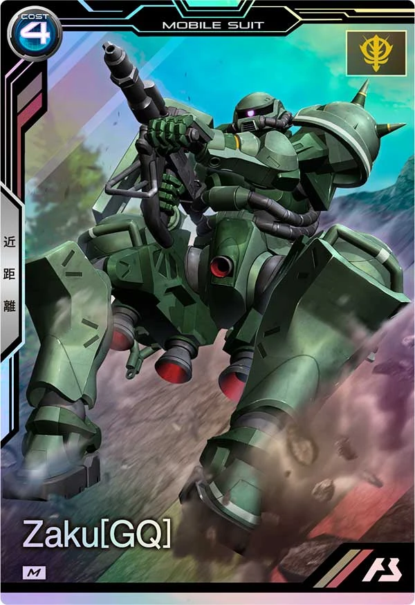
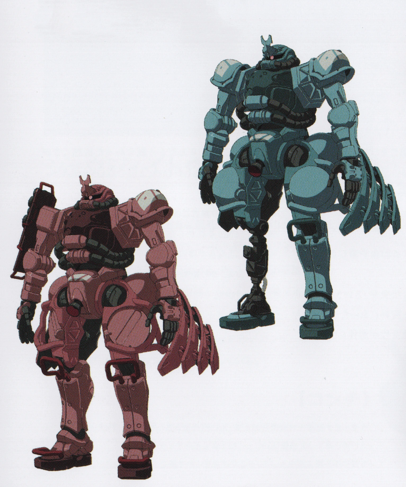

in the anime series Mobile Suit Gundam, there's a myriad of giant robots, called mobile suits, that people pilot

All the other mobile suits in my favorites list have been one of a kind, elite units piloted by ace pilots, but I have to admit I have a soft spot for the Zaku grunt suit.
Grunt suits are the mass produced mobile suits, made in the numbers of hundreds or thousands, and meant to be used by the rank and file of whichever armed forces they belong to. Therefore, they are usually not flashy or exceptionally strong, but instead they are the baseline of how you compare the abilities of the mobile suits.
The Zaku is not only the first grunt suit in the Gundam series, but the first mobile suit you see in the anime, but the Zaku I like the most comes from Mobile Suit Gundam GQuuuuuuX, where existing mobile suits have been redesigned by Neon Genesis Evangelion's Ikuto Yamashita, and his take on the Zaku is just amazing.
And what's more, the Gundam GQuuuuuuX anime includes so many variants of the Zaku redesign, since it is such a common mobile suit that people are customizing their own in the anime. You have police custom Zaku, Zaku costumnized for construction/civil use, and some customized for battling in fighting betting ring. I so want to buy a model kit of the Zaku and paint it and customize it!
